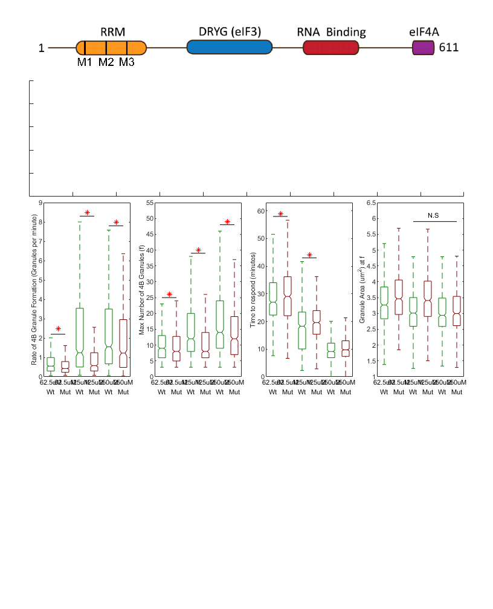

Figure 1 and 2
Do the analysis and make both of these figures.
Contents
- Load the model fit data for the live cell
- 24h induced Wild-Type 4B Data
- 24h induced 139A mutant 4B data
- fit the model to the datasets
- Subset only the good data
- Now plot the data
- Focus on the wt 4b cells for now
- Start with wt 4b cells treated with 125uM NaAsO2 as control vs all other NaAsO2 concentrations
- Make Figure 1 - eIF4B-GFP (WT)
- Figure 2 - RRM of eIF4B suppresses stress granule formation
- Start with wt 4b cells treated with 62.5uM NaAsO2 as control vs all other NaAsO2 concentrations and btwn cell lines
- Now use wt 4b cells treated with 125uM as control vs all other NaAsO2 concentrations and btwn cell lines
- Now use wt 4b cells treated with 250uM as control vs all other NaAsO2 concentrations and btwn cell lines
- Compare Wt treated with 125uM NaAsO2's granule size at f to Mut treated with 250uM NaAso2's granule size at F
- Plot the data for Figure 2
Load the model fit data for the live cell
addpath('Z:\code\Nick')
24h induced Wild-Type 4B Data
% 2023-05-03 dataset1 = load('Z:\imageData\SG_4B\2023-05-03 4B-WT 4B-Mut Tet curve NaAsO2 curve\2023-05-03 4B-WT 4B-Mut Tet curve NaAsO2 curve_Processed_Copy.mat'); dataset1 = dataset1.dataloc; % pull the loaded dataloc structure % append the movie's metadata dataset1.movieinfo.PixSizeX = 0.16; % um/px dataset1.movieinfo.PixSizeY = 0.16; % um/px dataset1.movieinfo.PixNumX = 3200; % pixels dataset1.movieinfo.PixNumY = 3200; % pixels dataset1.movieinfo.tsamp = 3; % minutes % 2023-06-15 dataset2 = load('Z:\imageData\SG_4B\2023-06-15 4b WT-Mut NaAso2 Curve\2023-06-15 4b WT-Mut NaAso2 Curve_Processed_Copy.mat'); dataset2 = dataset2.dataloc; % pull the loaded dataloc structure % append the movie's metadata dataset2.movieinfo.PixSizeX = 0.33; % um/px dataset2.movieinfo.PixSizeY = 0.33; % um/px dataset2.movieinfo.PixNumX = 1280; % pixels dataset2.movieinfo.PixNumY = 1080; % pixels dataset2.movieinfo.tsamp = 3; % minutes % 2023-06-29 dataset3 = load('Z:\imageData\SG_4B\2023-06-29 4B WT vs Mut TET curve NaAsO2 curve\2023-06-29 4B WT vs Mut TET curve NaAsO2 curve_Processed_Copy.mat'); dataset3 = dataset3.dataloc; % pull the loaded dataloc structure % append the movie's metadata dataset3.movieinfo.PixSizeX = 0.33; % um/px dataset3.movieinfo.PixSizeY = 0.33; % um/px dataset3.movieinfo.PixNumX = 1600; % pixels dataset3.movieinfo.PixNumY = 1600; % pixels dataset3.movieinfo.tsamp = 3; % minutes
24h induced 139A mutant 4B data
% 2023-05-03 (already loaded) % 2023-06-15 (already loaded) % 2023-06-29 (already loaded)
fit the model to the datasets
[fitData2,~] = convertDatalocToModelFit({dataset1,dataset2,dataset3}, 'NumGrans','pulsepars',{'f','td','ts','rate_in_min','min_to_respond','rsquared','granarea'},'afterf',1);
Subset only the good data
fitData = fitData2; % work with duplicated data (for safety) gFitData = fitData((fitData.NumGrans_rsquared > 0.8),:); % look for an r squared greater than 0.8 ? % fix and simplify naming gFitData.cell = strrep(gFitData.cell,'Hela_eIF4BGFP','HeLa_eIF4BGFP'); gFitData.cell = strrep(gFitData.cell,'Hela_eIF4BF139A','HeLa_4B139AGFP'); gFitData.cell = strrep(gFitData.cell,'HeLa_eIF4BGFP','Wt'); gFitData.cell = strrep(gFitData.cell,'HeLa_4B139AGFP','Mut');
Now plot the data
Make the fit models datalocDF = makeLiveCellDataframe({dataset1,dataset2,dataset3},'subset','TET100n24t_NaAsO2125u2t');
plotme = {'NumGrans'}; %,'granspercell' plottype = {'albeck mean fit fixed f'}; % 'albeck mean fit'
plot_by_ND_forJB('treatment', datalocDF,'plottype',plottype,'channel',plotme,'looptime',3,'font_size',8)
Focus on the wt 4b cells for now
Get the Min number of grans FROM MODEL (f), how long the cells were tet induced, and the dose of NaAsO2 for the Wt 4B cells
minGrans = 3; tetTime = '-24'; naAsO2 = ("62.5"|"125"|"250"); WTsubz = all([(any([contains(gFitData.treatment,['TET at hour ', tetTime]),~contains(gFitData.treatment,'TET')],2)),contains(gFitData.treatment,naAsO2),... (gFitData.NumGrans_f >= minGrans), contains(gFitData.cell,'Wt'),~contains(gFitData.treatment,'15.125uM')],2); % filter for the parameters set above wtSubData = gFitData(WTsubz,:); wtSubData.treatment = strrep(wtSubData.treatment,'0.1ug/mL TET at hour -24 and ',''); wtSubData.treatment = strrep(wtSubData.treatment,' NaAsO2 at hour 0',''); % Run the statistics comparing the wt-4B treated cells accross various concentrations of NaAsO2 and control % get averything for the reader if needed grpstats(wtSubData,"treatment",["mean","median","sem","std"],"DataVars",["NumGrans_rate_in_min","NumGrans_f","NumGrans_min_to_respond"]) % Now just print the means grpstats(wtSubData,"treatment","mean","DataVars",["NumGrans_rate_in_min","NumGrans_f","NumGrans_min_to_respond"])
ans =
3×14 table
treatment GroupCount mean_NumGrans_rate_in_min median_NumGrans_rate_in_min sem_NumGrans_rate_in_min std_NumGrans_rate_in_min mean_NumGrans_f median_NumGrans_f sem_NumGrans_f std_NumGrans_f mean_NumGrans_min_to_respond median_NumGrans_min_to_respond sem_NumGrans_min_to_respond std_NumGrans_min_to_respond
_________ __________ _________________________ ___________________________ ________________________ ________________________ _______________ _________________ ______________ ______________ ____________________________ ______________________________ ___________________________ ___________________________
62.5uM "62.5uM" 660 0.85908 0.55086 0.041435 1.0645 10.294 9 0.21369 5.4898 28.667 26.956 0.36765 9.4452
125uM "125uM" 685 2.696 1.2411 0.15065 3.9429 15.025 12 0.35427 9.2721 17.694 18.299 0.30333 7.939
250uM "250uM" 683 2.9299 1.5474 0.16579 4.3327 16.944 14 0.38418 10.04 10.058 9.1383 0.23837 6.2297
ans =
3×5 table
treatment GroupCount mean_NumGrans_rate_in_min mean_NumGrans_f mean_NumGrans_min_to_respond
_________ __________ _________________________ _______________ ____________________________
62.5uM "62.5uM" 660 0.85908 10.294 28.667
125uM "125uM" 685 2.696 15.025 17.694
250uM "250uM" 683 2.9299 16.944 10.058
Start with wt 4b cells treated with 125uM NaAsO2 as control vs all other NaAsO2 concentrations
% Test if number (f) is significantly different btwn the 4B cell lines [~,~,statsF] = anova1(wtSubData.NumGrans_f,wtSubData.treatment,'off'); [resultsMaxG,~,~,gnamesF] = multcompare(statsF,"CriticalValueType","dunnett",'ControlGroup',find(matches(statsF.gnames,'125uM')),'Display','off','Approximate',false); MaxGranulesFormed = array2table(resultsMaxG,"VariableNames", ["Group","Control Group","Lower Limit","Difference","Upper Limit","P-value"]); MaxGranulesFormed.("Group") = gnamesF(MaxGranulesFormed.("Group")); MaxGranulesFormed.("Control Group") = gnamesF(MaxGranulesFormed.("Control Group")) % Test if time to respond is significantly different btwn the 4B cell lines [~,~,statsT2R] = anova1(wtSubData.NumGrans_min_to_respond,wtSubData.treatment,'off'); [resultsTime2Resp,~,~,gnamesT2R] = multcompare(statsT2R,"CriticalValueType","dunnett",'ControlGroup',find(matches(statsT2R.gnames,'125uM')),'Display','off','Approximate',false); Time2Respond = array2table(resultsTime2Resp,"VariableNames", ["Group","Control Group","Lower Limit","Difference","Upper Limit","P-value"]); Time2Respond.("Group") = gnamesT2R(Time2Respond.("Group")); Time2Respond.("Control Group") = gnamesT2R(Time2Respond.("Control Group")) % Test if Rate is significantly different btwn the 125 and other 2 doses [~,~,statsR] = anova1(wtSubData.NumGrans_rate_in_min,wtSubData.treatment,'off'); [resultsRate,~,~,gnamesRate] = multcompare(statsR,"CriticalValueType","dunnett",'ControlGroup',find(matches(statsR.gnames,'125uM')),'Display','off','Approximate',false); RateOfGranuleFormation = array2table(resultsRate,"VariableNames", ["Group","Control Group","Lower Limit","Difference","Upper Limit","P-value"]); RateOfGranuleFormation.("Group") = gnamesRate(RateOfGranuleFormation.("Group")); RateOfGranuleFormation.("Control Group") = gnamesRate(RateOfGranuleFormation.("Control Group"))
MaxGranulesFormed =
2×6 table
Group Control Group Lower Limit Difference Upper Limit P-value
__________ _____________ ___________ __________ ___________ __________
{'62.5uM'} {'125uM'} -5.7613 -4.7309 -3.7004 3.4417e-15
{'250uM' } {'125uM'} 0.89797 1.9195 2.9411 6.5756e-05
Time2Respond =
2×6 table
Group Control Group Lower Limit Difference Upper Limit P-value
__________ _____________ ___________ __________ ___________ __________
{'62.5uM'} {'125uM'} 10.011 10.973 11.934 5.5511e-16
{'250uM' } {'125uM'} -8.5894 -7.6361 -6.6829 4.4409e-16
RateOfGranuleFormation =
2×6 table
Group Control Group Lower Limit Difference Upper Limit P-value
__________ _____________ ___________ __________ ___________ _________
{'62.5uM'} {'125uM'} -2.2542 -1.8369 -1.4195 4.996e-15
{'250uM' } {'125uM'} -0.17983 0.23394 0.64771 0.35045
Make Figure 1 - eIF4B-GFP (WT)
% Figure 1D % plot the max grans, Rate of granule formation, and time to respond to treatment clrz = [... 0.9290, 0.6940, 0.1250; ... % 62.5uM Color 0.8500, 0.3250, 0.0980;... % 125uM Color 0.6350, 0.0780, 0.1840; ... % 250uM Color ] ; figure1 = figure; set(figure1,'Units',"Inches",'Position',[0,0,8.5,11],'PaperPosition',[0,0,8.5,11]); f1ax = []; clear f1ax; f1ax = axes; % plot the rate ax(1) = subplot(1,4,2); boxplot(wtSubData.NumGrans_rate_in_min,wtSubData.treatment,'Notch','on','Symbol','','Colors',clrz); hold on; % Draw a black line with red asterisk to show significance plot(1:2, [8.25,8.25], '-k',1.5, 8.5, '*r') % 62.5 vs 125 hold off; ylim([0,9]) ylabel('Rate of 4B Granule Formation (Granules per minute)') xlabel('NaAsO2 Dose') % plot the max granules ax(2) = subplot(1,4,3); boxplot(wtSubData.NumGrans_f,wtSubData.treatment,'Notch','on','Symbol','','Colors',clrz); hold on; % Draw a black line with red asterisk to show significance plot(1:2, [40,40], '-k',1.5, 42, '*r') % 62.5 vs 125 plot(2:3, [48,48], '-k',2.5, 50, '*r') % 125 vs 250 hold off; ylim([0,55]) ylabel('Max Number of 4B Granules (f)') xlabel('NaAsO2 Dose') % plot the time 2 respond ax(3) = subplot(1,4,4); boxplot(wtSubData.NumGrans_min_to_respond,wtSubData.treatment,'Notch','on','Symbol','','Colors',clrz); hold on; % Draw a black line with red asterisk to show significance plot(1:2, [54,54], '-k',1.5, 56, '*r') % 62.5 vs 125 plot(2:3, [44,44], '-k',2.5, 46, '*r') % 125 vs 250 hold off; ylim([0,60]) ylabel('Time to respond (minutes)') xlabel('NaAsO2 Dose') % loop through the subplots that make up figure 2D, size and space them appropriately pWidth = 1.5; % plot width in inches pHeight = 3; % plot height in inches sWidth = (7.25-(pWidth*4))/3; % gap btwn plots in inches for iSub = 1:3 set(ax(iSub),'Units','Inches','Position',[0.75+(pWidth*(iSub+1))+(sWidth*(iSub-4)), 2.75, pWidth, pHeight]) end fontsize(8,"points"); fontname("Arial"); saveas(figure1,'Z:\imageData\SG_4B\Paper_Figures\Output_Figures\Figure_1.fig') saveas(figure1,'Z:\imageData\SG_4B\Paper_Figures\Output_Figures\Figure_1.svg')

Figure 2 - RRM of eIF4B suppresses stress granule formation
Max number of grans FROM MODEL (f) versus treatment and cell line
minGrans = 3; tetTime = '-24'; naAsO2 = ("62.5"|"125"|"250"); subz = all([(any([contains(gFitData.treatment,['TET at hour ', tetTime]),~contains(gFitData.treatment,'TET')],2)),contains(gFitData.treatment,naAsO2),... (gFitData.NumGrans_f >= minGrans),~contains(gFitData.treatment,'15.125uM')],2); % filter for the parameters set above % subset the data subData = gFitData(subz,:); % simplify the name since all the data is 24hr tet induced, NaAsO2 is at hour 0, and we know HeLa_eIF4BGFP is wt/HeLa_4B139AGFP is mut subData.treatment = strrep(subData.treatment,'0.1ug/mL TET at hour -24 and ',''); subData.treatment = strrep(subData.treatment,' NaAsO2 at hour 0',''); % what happens if we filter the data more? % can we set a reasonable max f (no cell should form more than this # of % granules?) maybe try this one day... % Run the statistics comparing the cell lines using wt treated with various concentrations of NaAsO2 as control % get averything for the reader if needed grpstats(subData,["treatment","cell"],["mean","median","sem","std"],"DataVars",["NumGrans_rate_in_min","NumGrans_f","NumGrans_min_to_respond","NumGrans_granarea"]) % Now just print the means grpstats(subData,["treatment","cell"],"mean","DataVars",["NumGrans_rate_in_min","NumGrans_f","NumGrans_min_to_respond","NumGrans_granarea"])
ans =
6×19 table
treatment cell GroupCount mean_NumGrans_rate_in_min median_NumGrans_rate_in_min sem_NumGrans_rate_in_min std_NumGrans_rate_in_min mean_NumGrans_f median_NumGrans_f sem_NumGrans_f std_NumGrans_f mean_NumGrans_min_to_respond median_NumGrans_min_to_respond sem_NumGrans_min_to_respond std_NumGrans_min_to_respond mean_NumGrans_granarea median_NumGrans_granarea sem_NumGrans_granarea std_NumGrans_granarea
_________ _____ __________ _________________________ ___________________________ ________________________ ________________________ _______________ _________________ ______________ ______________ ____________________________ ______________________________ ___________________________ ___________________________ ______________________ ________________________ _____________________ _____________________
62.5uM_Wt "62.5uM" "Wt" 660 0.85908 0.55086 0.041435 1.0645 10.294 9 0.21369 5.4898 28.667 26.956 0.36765 9.4452 3.3574 3.267 0.031977 0.80833
62.5uM_Mut "62.5uM" "Mut" 639 0.68017 0.42648 0.030644 0.77464 9.5133 8 0.22233 5.6201 29.953 29.035 0.4483 11.332 3.6064 3.4634 0.035738 0.88843
125uM_Wt "125uM" "Wt" 685 2.696 1.2411 0.15065 3.9429 15.025 12 0.35427 9.2721 17.694 18.299 0.30333 7.939 3.0823 3.009 0.02957 0.74102
125uM_Mut "125uM" "Mut" 566 1.0841 0.57254 0.058964 1.4028 10.535 8 0.28701 6.8282 20.414 19.609 0.34641 8.2413 3.4981 3.4096 0.03594 0.83363
250uM_Wt "250uM" "Wt" 683 2.9299 1.5474 0.16579 4.3327 16.944 14 0.38418 10.04 10.058 9.1383 0.23837 6.2297 3.0674 2.9403 0.030244 0.74759
250uM_Mut "250uM" "Mut" 630 2.4896 1.2245 0.15822 3.9712 13.978 12 0.33567 8.4253 11.198 9.7429 0.31462 7.8969 3.1458 2.9948 0.032294 0.76898
ans =
6×7 table
treatment cell GroupCount mean_NumGrans_rate_in_min mean_NumGrans_f mean_NumGrans_min_to_respond mean_NumGrans_granarea
_________ _____ __________ _________________________ _______________ ____________________________ ______________________
62.5uM_Wt "62.5uM" "Wt" 660 0.85908 10.294 28.667 3.3574
62.5uM_Mut "62.5uM" "Mut" 639 0.68017 9.5133 29.953 3.6064
125uM_Wt "125uM" "Wt" 685 2.696 15.025 17.694 3.0823
125uM_Mut "125uM" "Mut" 566 1.0841 10.535 20.414 3.4981
250uM_Wt "250uM" "Wt" 683 2.9299 16.944 10.058 3.0674
250uM_Mut "250uM" "Mut" 630 2.4896 13.978 11.198 3.1458
Start with wt 4b cells treated with 62.5uM NaAsO2 as control vs all other NaAsO2 concentrations and btwn cell lines
Test if Rate is significantly different btwn the 4B cell lines
[~,~,statsR] = anova1(subData.NumGrans_rate_in_min,strcat(subData.treatment,{' '},subData.cell),'off');
[resultsRate,~,~,gnamesRate] = multcompare(statsR,"CriticalValueType","dunnett",'ControlGroup',find(matches(statsR.gnames,'62.5uM Wt')),'Display','off','Approximate',false);
RateOfGranuleFormationVs62Wt = array2table(resultsRate,"VariableNames", ["Group","Control Group","Lower Limit","Difference","Upper Limit","P-value"]);
RateOfGranuleFormationVs62Wt.("Group") = gnamesRate(RateOfGranuleFormationVs62Wt.("Group"));
RateOfGranuleFormationVs62Wt.("Control Group") = gnamesRate(RateOfGranuleFormationVs62Wt.("Control Group"))
% Test if number (f) is significantly different btwn the 4B cell lines
[~,~,statsF] = anova1(subData.NumGrans_f,strcat(subData.treatment,{' '},subData.cell),'off');
[resultsMaxG,~,~,gnamesF] = multcompare(statsF,"CriticalValueType","dunnett",'ControlGroup',find(matches(statsF.gnames,'62.5uM Wt')),'Display','off','Approximate',false);
MaxGranulesFormedVs62WT = array2table(resultsMaxG,"VariableNames", ["Group","Control Group","Lower Limit","Difference","Upper Limit","P-value"]);
MaxGranulesFormedVs62WT.("Group") = gnamesF(MaxGranulesFormedVs62WT.("Group"));
MaxGranulesFormedVs62WT.("Control Group") = gnamesF(MaxGranulesFormedVs62WT.("Control Group"))
% Test if time to respond is significantly different btwn the 4B cell lines
[~,~,statsT2R] = anova1(subData.NumGrans_min_to_respond,strcat(subData.treatment,{' '},subData.cell),'off');
[resultsTime2Resp,~,~,gnamesT2R] = multcompare(statsT2R,"CriticalValueType","dunnett",'ControlGroup',find(matches(statsT2R.gnames,'62.5uM Wt')),'Display','off','Approximate',false);
Time2RespondVs62Wt = array2table(resultsTime2Resp,"VariableNames", ["Group","Control Group","Lower Limit","Difference","Upper Limit","P-value"]);
Time2RespondVs62Wt.("Group") = gnamesT2R(Time2RespondVs62Wt.("Group"));
Time2RespondVs62Wt.("Control Group") = gnamesT2R(Time2RespondVs62Wt.("Control Group"))
% Test if granule size at F is significantly different btwn the 4B cell lines
[~,~,statsS] = anova1(subData.NumGrans_granarea,strcat(subData.treatment,{' '},subData.cell),'off');
[resultsS,~,~,gnamesS] = multcompare(statsS,"CriticalValueType","dunnett",'ControlGroup',find(matches(statsS.gnames,'62.5uM Wt')),'Display','off','Approximate',false);
GranuleSizeVs62Wt = array2table(resultsS,"VariableNames", ["Group","Control Group","Lower Limit","Difference","Upper Limit","P-value"]);
GranuleSizeVs62Wt.("Group") = gnamesS(GranuleSizeVs62Wt.("Group"));
GranuleSizeVs62Wt.("Control Group") = gnamesS(GranuleSizeVs62Wt.("Control Group"))
RateOfGranuleFormationVs62Wt =
5×6 table
Group Control Group Lower Limit Difference Upper Limit P-value
______________ _____________ ___________ __________ ___________ _______
{'62.5uM Mut'} {'62.5uM Wt'} -0.60291 -0.17892 0.24508 0.73509
{'125uM Wt' } {'62.5uM Wt'} 1.4202 1.8369 2.2536 0
{'125uM Mut' } {'62.5uM Wt'} -0.21262 0.22505 0.66272 0.56691
{'250uM Wt' } {'62.5uM Wt'} 1.6538 2.0708 2.4878 0
{'250uM Mut' } {'62.5uM Wt'} 1.205 1.6305 2.0561 0
MaxGranulesFormedVs62WT =
5×6 table
Group Control Group Lower Limit Difference Upper Limit P-value
______________ _____________ ___________ __________ ___________ _______
{'62.5uM Mut'} {'62.5uM Wt'} -1.8782 -0.78064 0.31695 0.25801
{'125uM Wt' } {'62.5uM Wt'} 3.6522 4.7309 5.8096 0
{'125uM Mut' } {'62.5uM Wt'} -0.89158 0.2414 1.3744 0.97795
{'250uM Wt' } {'62.5uM Wt'} 5.571 6.6504 7.7299 0
{'250uM Mut' } {'62.5uM Wt'} 2.5823 3.6838 4.7854 0
Time2RespondVs62Wt =
5×6 table
Group Control Group Lower Limit Difference Upper Limit P-value
______________ _____________ ___________ __________ ___________ ________
{'62.5uM Mut'} {'62.5uM Wt'} 0.079602 1.2854 2.4912 0.031785
{'125uM Wt' } {'62.5uM Wt'} -12.158 -10.973 -9.7878 0
{'125uM Mut' } {'62.5uM Wt'} -9.498 -8.2533 -7.0086 0
{'250uM Wt' } {'62.5uM Wt'} -19.795 -18.609 -17.423 0
{'250uM Mut' } {'62.5uM Wt'} -18.68 -17.47 -16.259 0
GranuleSizeVs62Wt =
5×6 table
Group Control Group Lower Limit Difference Upper Limit P-value
______________ _____________ ___________ __________ ___________ __________
{'62.5uM Mut'} {'62.5uM Wt'} 0.13549 0.24903 0.36257 2.1514e-07
{'125uM Wt' } {'62.5uM Wt'} -0.38809 -0.27501 -0.16193 4.3236e-09
{'125uM Mut' } {'62.5uM Wt'} 0.022962 0.14072 0.25847 0.011992
{'250uM Wt' } {'62.5uM Wt'} -0.40385 -0.28998 -0.17611 6.3008e-10
{'250uM Mut' } {'62.5uM Wt'} -0.32763 -0.21153 -0.09542 2.7688e-05
Now use wt 4b cells treated with 125uM as control vs all other NaAsO2 concentrations and btwn cell lines
Test if Rate is significantly different btwn the 4B cell lines
[~,~,statsR] = anova1(subData.NumGrans_rate_in_min,strcat(subData.treatment,{' '},subData.cell),'off');
[resultsRate,~,~,gnamesRate] = multcompare(statsR,"CriticalValueType","dunnett",'ControlGroup',find(matches(statsR.gnames,'125uM Wt')),'Display','off','Approximate',false);
RateOfGranuleFormationVs125Wt = array2table(resultsRate,"VariableNames", ["Group","Control Group","Lower Limit","Difference","Upper Limit","P-value"]);
RateOfGranuleFormationVs125Wt.("Group") = gnamesRate(RateOfGranuleFormationVs125Wt.("Group"));
RateOfGranuleFormationVs125Wt.("Control Group") = gnamesRate(RateOfGranuleFormationVs125Wt.("Control Group"))
% Test if number (f) is significantly different btwn the 4B cell lines
[~,~,statsF] = anova1(subData.NumGrans_f,strcat(subData.treatment,{' '},subData.cell),'off');
[resultsMaxG,~,~,gnamesF] = multcompare(statsF,"CriticalValueType","dunnett",'ControlGroup',find(matches(statsF.gnames,'125uM Wt')),'Display','off','Approximate',false);
MaxGranulesFormedVs125Wt = array2table(resultsMaxG,"VariableNames", ["Group","Control Group","Lower Limit","Difference","Upper Limit","P-value"]);
MaxGranulesFormedVs125Wt.("Group") = gnamesF(MaxGranulesFormedVs125Wt.("Group"));
MaxGranulesFormedVs125Wt.("Control Group") = gnamesF(MaxGranulesFormedVs125Wt.("Control Group"))
% Test if time to respond is significantly different btwn the 4B cell lines
[~,~,statsT2R] = anova1(subData.NumGrans_min_to_respond,strcat(subData.treatment,{' '},subData.cell),'off');
[resultsTime2Resp,~,~,gnamesT2R] = multcompare(statsT2R,"CriticalValueType","dunnett",'ControlGroup',find(matches(statsT2R.gnames,'125uM Wt')),'Display','off','Approximate',false);
Time2RespondVs125Wt = array2table(resultsTime2Resp,"VariableNames", ["Group","Control Group","Lower Limit","Difference","Upper Limit","P-value"]);
Time2RespondVs125Wt.("Group") = gnamesT2R(Time2RespondVs125Wt.("Group"));
Time2RespondVs125Wt.("Control Group") = gnamesT2R(Time2RespondVs125Wt.("Control Group"))
% Test if granule size at F is significantly different btwn the 4B cell lines
[~,~,statsS] = anova1(subData.NumGrans_granarea,strcat(subData.treatment,{' '},subData.cell),'off');
[resultsS,~,~,gnamesS] = multcompare(statsS,"CriticalValueType","dunnett",'ControlGroup',find(matches(statsS.gnames,'125uM Wt')),'Display','off','Approximate',false);
GranuleSizeVs125Wt = array2table(resultsS,"VariableNames", ["Group","Control Group","Lower Limit","Difference","Upper Limit","P-value"]);
GranuleSizeVs125Wt.("Group") = gnamesS(GranuleSizeVs125Wt.("Group"));
GranuleSizeVs125Wt.("Control Group") = gnamesS(GranuleSizeVs125Wt.("Control Group"))
RateOfGranuleFormationVs125Wt =
5×6 table
Group Control Group Lower Limit Difference Upper Limit P-value
______________ _____________ ___________ __________ ___________ _______
{'62.5uM Wt' } {'125uM Wt'} -2.2541 -1.8369 -1.4197 0
{'62.5uM Mut'} {'125uM Wt'} -2.4365 -2.0158 -1.5951 0
{'125uM Mut' } {'125uM Wt'} -2.0463 -1.6118 -1.1773 0
{'250uM Wt' } {'125uM Wt'} -0.17966 0.23394 0.64754 0.47767
{'250uM Mut' } {'125uM Wt'} -0.62857 -0.20635 0.21587 0.61696
MaxGranulesFormedVs125Wt =
5×6 table
Group Control Group Lower Limit Difference Upper Limit P-value
______________ _____________ ___________ __________ ___________ __________
{'62.5uM Wt' } {'125uM Wt'} -5.8108 -4.7309 -3.6509 0
{'62.5uM Mut'} {'125uM Wt'} -6.6005 -5.5115 -4.4225 0
{'125uM Mut' } {'125uM Wt'} -5.6142 -4.4895 -3.3648 0
{'250uM Wt' } {'125uM Wt'} 0.84888 1.9195 2.9902 3.0976e-05
{'250uM Mut' } {'125uM Wt'} -2.14 -1.047 0.045949 0.065792
Time2RespondVs125Wt =
5×6 table
Group Control Group Lower Limit Difference Upper Limit P-value
______________ _____________ ___________ __________ ___________ __________
{'62.5uM Wt' } {'125uM Wt'} 9.7868 10.973 12.159 0
{'62.5uM Mut'} {'125uM Wt'} 11.062 12.258 13.454 0
{'125uM Mut' } {'125uM Wt'} 1.4843 2.7196 3.9549 1.4239e-07
{'250uM Wt' } {'125uM Wt'} -8.8121 -7.6361 -6.4602 0
{'250uM Mut' } {'125uM Wt'} -7.6971 -6.4967 -5.2962 0
GranuleSizeVs125Wt =
5×6 table
Group Control Group Lower Limit Difference Upper Limit P-value
______________ _____________ ___________ __________ ___________ __________
{'62.5uM Wt' } {'125uM Wt'} 0.16201 0.27501 0.388 3.4935e-09
{'62.5uM Mut'} {'125uM Wt'} 0.4101 0.52404 0.63798 0
{'125uM Mut' } {'125uM Wt'} 0.29759 0.41573 0.53386 0
{'250uM Wt' } {'125uM Wt'} -0.12924 -0.014974 0.099298 0.99759
{'250uM Mut' } {'125uM Wt'} -0.053014 0.063482 0.17998 0.51315
Now use wt 4b cells treated with 250uM as control vs all other NaAsO2 concentrations and btwn cell lines
Test if Rate is significantly different btwn the 4B cell lines
[~,~,statsR] = anova1(subData.NumGrans_rate_in_min,strcat(subData.treatment,{' '},subData.cell),'off');
[resultsRate,~,~,gnamesRate] = multcompare(statsR,"CriticalValueType","dunnett",'ControlGroup',find(matches(statsR.gnames,'250uM Wt')),'Display','off','Approximate',false);
RateOfGranuleFormationVs250Wt = array2table(resultsRate,"VariableNames", ["Group","Control Group","Lower Limit","Difference","Upper Limit","P-value"]);
RateOfGranuleFormationVs250Wt.("Group") = gnamesRate(RateOfGranuleFormationVs250Wt.("Group"));
RateOfGranuleFormationVs250Wt.("Control Group") = gnamesRate(RateOfGranuleFormationVs250Wt.("Control Group"))
% Test if number (f) is significantly different btwn the 4B cell lines
[~,~,statsF] = anova1(subData.NumGrans_f,strcat(subData.treatment,{' '},subData.cell),'off');
[resultsMaxG,~,~,gnamesF] = multcompare(statsF,"CriticalValueType","dunnett",'ControlGroup',find(matches(statsF.gnames,'250uM Wt')),'Display','off','Approximate',false);
MaxGranulesFormedVs250Wt = array2table(resultsMaxG,"VariableNames", ["Group","Control Group","Lower Limit","Difference","Upper Limit","P-value"]);
MaxGranulesFormedVs250Wt.("Group") = gnamesF(MaxGranulesFormedVs250Wt.("Group"));
MaxGranulesFormedVs250Wt.("Control Group") = gnamesF(MaxGranulesFormedVs250Wt.("Control Group"))
% Test if time to respond is significantly different btwn the 4B cell lines
[~,~,statsT2R] = anova1(subData.NumGrans_min_to_respond,strcat(subData.treatment,{' '},subData.cell),'off');
[resultsTime2Resp,~,~,gnamesT2R] = multcompare(statsT2R,"CriticalValueType","dunnett",'ControlGroup',find(matches(statsT2R.gnames,'250uM Wt')),'Display','off','Approximate',false);
Time2RespondVs250Wt = array2table(resultsTime2Resp,"VariableNames", ["Group","Control Group","Lower Limit","Difference","Upper Limit","P-value"]);
Time2RespondVs250Wt.("Group") = gnamesT2R(Time2RespondVs250Wt.("Group"));
Time2RespondVs250Wt.("Control Group") = gnamesT2R(Time2RespondVs250Wt.("Control Group"))
RateOfGranuleFormationVs250Wt =
5×6 table
Group Control Group Lower Limit Difference Upper Limit P-value
______________ _____________ ___________ __________ ___________ ________
{'62.5uM Wt' } {'250uM Wt'} -2.4882 -2.0708 -1.6534 0
{'62.5uM Mut'} {'250uM Wt'} -2.6706 -2.2497 -1.8288 0
{'125uM Wt' } {'250uM Wt'} -0.64746 -0.23394 0.17958 0.47734
{'125uM Mut' } {'250uM Wt'} -2.2804 -1.8458 -1.4111 0
{'250uM Mut' } {'250uM Wt'} -0.86272 -0.44029 -0.017848 0.037498
MaxGranulesFormedVs250Wt =
5×6 table
Group Control Group Lower Limit Difference Upper Limit P-value
______________ _____________ ___________ __________ ___________ __________
{'62.5uM Wt' } {'250uM Wt'} -7.7311 -6.6504 -5.5698 0
{'62.5uM Mut'} {'250uM Wt'} -8.5207 -7.4311 -6.3414 0
{'125uM Wt' } {'250uM Wt'} -2.9901 -1.9195 -0.84899 2.8953e-05
{'125uM Mut' } {'250uM Wt'} -7.5344 -6.409 -5.2837 0
{'250uM Mut' } {'250uM Wt'} -4.0602 -2.9666 -1.8729 2.8742e-11
Time2RespondVs250Wt =
5×6 table
Group Control Group Lower Limit Difference Upper Limit P-value
______________ _____________ ___________ __________ ___________ ________
{'62.5uM Wt' } {'250uM Wt'} 17.422 18.609 19.796 0
{'62.5uM Mut'} {'250uM Wt'} 18.697 19.894 21.091 0
{'125uM Wt' } {'250uM Wt'} 6.4601 7.6361 8.8122 0
{'125uM Mut' } {'250uM Wt'} 9.1194 10.356 11.592 0
{'250uM Mut' } {'250uM Wt'} -0.061949 1.1395 2.3409 0.069893
Compare Wt treated with 125uM NaAsO2's granule size at f to Mut treated with 250uM NaAso2's granule size at F
At those doses wt and mut have the same F,the question is, when they have the same number of granules, are the granules different sizes?
% Test if granule size at F is significantly different btwn the 4B cell lines [~,~,statsS] = anova1(subData.NumGrans_granarea,strcat(subData.treatment,{' '},subData.cell),'off'); [resultsS,~,~,gnamesS] = multcompare(statsS,"CriticalValueType","dunnett",'ControlGroup',find(matches(statsS.gnames,'250uM Wt')),'Display','off','Approximate',false); GranuleSizeVs250Wt = array2table(resultsS,"VariableNames", ["Group","Control Group","Lower Limit","Difference","Upper Limit","P-value"]); GranuleSizeVs250Wt.("Group") = gnamesS(GranuleSizeVs250Wt.("Group")); GranuleSizeVs250Wt.("Control Group") = gnamesS(GranuleSizeVs250Wt.("Control Group")) % The answer is NO.
GranuleSizeVs250Wt =
5×6 table
Group Control Group Lower Limit Difference Upper Limit P-value
______________ _____________ ___________ __________ ___________ __________
{'62.5uM Wt' } {'250uM Wt'} 0.17627 0.28998 0.4037 1.3995e-09
{'62.5uM Mut'} {'250uM Wt'} 0.42435 0.53901 0.65367 0
{'125uM Wt' } {'250uM Wt'} -0.09923 0.014974 0.12918 0.99754
{'125uM Mut' } {'250uM Wt'} 0.31188 0.4307 0.54952 0
{'250uM Mut' } {'250uM Wt'} -0.038738 0.078456 0.19565 0.31185
Plot the data for Figure 2
% make a new figure figure2 = figure; set(figure2,'Units',"Inches",'Position',[0,0,8.5,11],'PaperPosition',[0,0,8.5,11]); ax=[]; clear ax; % Figure 2A (4B mutant diagram) - make an axis handle for the 4B RRM diagram and load the svg into it ax(1) = subplot(4,4,[1,4]); set(ax(1),'Units','Inches','Position',[0.5, 9.2, 7.5, 1]) F2A = imread('Z:\imageData\SG_4B\Paper_Figures\Images_For_Figures\Figure_2A_4B_RRM_Diagram.jpg'); imshow(F2A,"Parent",ax) % Figure 2B - Images of 4B mutant images - [Nuclei, 4B mutant GFP, G3BP1, merged] ax(2) = subplot(4,4,[5,8]); set(ax(2),'Units','Inches','Position',[0.5, 7.1, 7.5, 2]) xticklabels({''}); yticklabels({''}); % Figure 4C - plot all rate, f, time 2 respond, and max granule area as box and wisker plots % set the wt vs mutant colors clrz = [0, 0.5, 0; ... 0.5, 0, 0]; % plot the rate ax(3) = subplot(4,4,13); boxplot(subData.NumGrans_rate_in_min,{subData.treatment,subData.cell},'Symbol','','Notch','on','colorgroup',subData.cell,'Colors',clrz); % ylim([0,9]) hold on; % Draw a black line with red asterisk to show significance plot(1:2, [2.2,2.2], '-k',1.5, 2.5, '*r') % 62.5 wt vs mut plot(3:4, [8.3,8.3], '-k',3.5, 8.5, '*r') % 125 wt vs mut plot(5:6, [7.8,7.8], '-k',5.5, 8, '*r') % 250 wt vs mut hold off; ylabel('Rate of 4B Granule Formation (Granules per minute)'); % plot the max granules ax(4) = subplot(4,4,14); boxplot(subData.NumGrans_f,{subData.treatment,subData.cell},'Notch','on','Symbol','','colorgroup',subData.cell,'Colors',clrz); ylim([0,55]) hold on % Draw a black line with red asterisk to show significance plot(1:2, [25,25], '-k',1.5, 26, '*r') % 62.5 wt vs mut plot(3:4, [39,39], '-k',3.5, 40, '*r') % 125 wt vs mut plot(5:6, [48,48], '-k',5.5, 49, '*r') % 250 wt vs mut hold off ylabel('Max Number of 4B Granules (f)'); % plot the time 2 respond ax(5) = subplot(4,4,15); boxplot(subData.NumGrans_min_to_respond,{subData.treatment,subData.cell},'Notch','on','Symbol','','colorgroup',subData.cell,'Colors',clrz); ylim([0,63]) hold on % Draw a black line with red asterisk to show significance plot(1:2, [58,58], '-k',1.5, 59, '*r') % 62.5 wt vs mut plot(3:4, [43,43], '-k',3.5, 44, '*r') % 125 wt vs mut % plot(5:6, [48,48], '-k',5.5, 50, '*r') % 250 wt vs mut - NOT SIGNIFICANT hold off ylabel('Time to respond (minutes)'); % plot the average granule area at max f ax(6) = subplot(4,4,16); boxplot(subData.NumGrans_granarea,{subData.treatment,subData.cell},'Symbol','','Notch','on','colorgroup',subData.cell,'Colors',clrz); hold on % Draw a black line with red asterisk to show significance %plot(1:2, [2.2,2.2], '-k',1.5, 2.5, '*r') % 62.5 wt vs mut %plot(3:4, [8.3,8.3], '-k',3.5, 8.5, '*r') % 125 wt vs mut %plot(5:6, [48,48], '-k',5.5, 50, '*r') % 250 wt vs mut plot(3:6, [5.9,5.9,5.9,5.9], '-k') % 250 wt vs mut - Show 125uM wt is gran size is not significantly different than 250uM mut (they have the same # of granules at F). text(4, 6.1,'N.S') hold off ylim([1,6.5]) ylabel('Granule Area (um^2) at f'); % loop through the subplots that make up figure 2D, size and space them appropriately pWidth = 1.5; % plot width in inches pHeight = 3; % plot height in inches sWidth = (7.25-(pWidth*4))/3; % gap btwn plots in inches for iSub = 3:6 set(ax(iSub),'Units','Inches','Position',[0.75+(pWidth*(iSub-3))+(sWidth*(iSub-3)), 4, pWidth, pHeight]) end fontsize(8,"points"); fontname("Arial"); saveas(figure2,'Z:\imageData\SG_4B\Paper_Figures\Output_Figures\Figure_2.fig') saveas(figure2,'Z:\imageData\SG_4B\Paper_Figures\Output_Figures\Figure_2.svg')